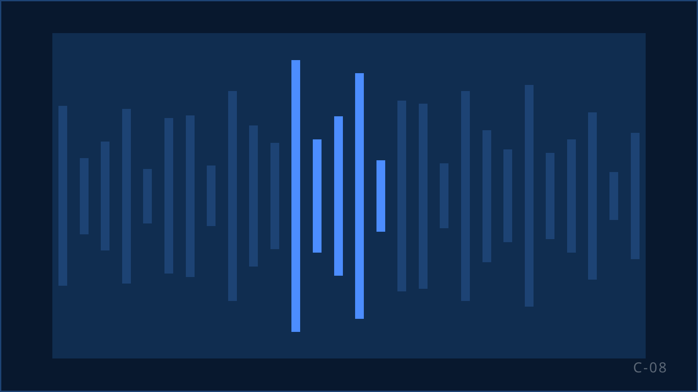

Abonnementenverkoop en retentie voor uitgevers
Uitgevers van dag-, nieuws- en weekbladen en tijdschriften houden ook na 1 juli 2026 telefonisch bereik naar abonnees en oud-abonnees. KISS werft, behoudt en upgradet abonnees voor uitgevers en abonnementsmerken, met teams die het product kennen en de regels beheersen. ISO 27001-gecertificeerd.

Wat een uitgever van een salesteam vraagt
Het opzegmoment
Een abonnee die opzegt, is niet weg. Het gesprek op dat moment bepaalt of de relatie doorgaat, in welke vorm, en tegen welke voorwaarden. Dat vraagt agents die het product kennen en kunnen luisteren.
Print, digitaal en de mix
Een weekendabonnement, een digitaal abonnement, een combinatie: het aanbod is breder dan vroeger. Agents moeten per gesprek het passende aanbod kiezen, niet het duurste.
Seizoen en actie
Zomercampagnes, najaarsacties, introductieperiodes: het volume schommelt. Een salesteam moet meebewegen zonder dat de kwaliteit inzakt bij de piek.
Het merk aan de lijn
Elk gesprek wordt gevoerd namens een titel die de lezer al jaren kent. Een slecht gesprek kost meer dan een abonnement.
De regels voor uitgevers sinds 1 juli 2026
| Regel | Wat het betekent | Hoe KISS dit toepast |
|---|---|---|
| Uitzondering blijft voor uitgevers van periodieken (art. 11.7 lid 6) | Uitgevers van dagbladen, weekbladen, tijdschriften en andere ten minste driemaal per jaar periodiek verschijnende uitgaven mogen contactgegevens die zij van hun eigen klanten kregen bij de verkoop van een product of dienst zonder aparte opt-in gebruiken voor eigen gelijksoortige producten of diensten, met de mogelijkheid om bij iedere boodschap kosteloos verzet aan te tekenen. | Bestandscheck per record: aantoonbare toestemming of een wettelijke uitzondering; termijn gecontroleerd; ontdubbeld tegen de opt-out-lijst van de opdrachtgever. |
| Termijn | De Telecommunicatiewet stelt geen maximale termijn. De Code voor Telemarketing, zelfregulering, hanteert maximaal drie jaar na afloop van de relatie. | Termijn wordt per campagne vastgelegd in de briefing en de verwerkersovereenkomst. |
| Schriftelijkheidsvereiste (art. 6:230v lid 6 BW) | Een overeenkomst op afstand tot het geregeld verrichten van diensten of tot het geregeld leveren van gas, elektriciteit, water of stadsverwarming, gesloten in een door de handelaar geïnitieerd telefoongesprek, wordt schriftelijk aangegaan: een mondeling "ja" volstaat niet. Uitgezonderd is de verlenging of vernieuwing van een bestaande overeenkomst. De wettekst noemt de geregelde levering van zaken niet; of een abonnement daaronder valt, hangt af van de vorm. | Bevestiging per e-mail, sms of brief met alle verplichte informatie; waar de wet dat vraagt is het abonnement pas definitief na aanvaarding door de consument. |
| Identificatieplicht (art. 6:230v lid 6 BW) | Aan het begin van het gesprek: identiteit van de handelaar, namens wie wordt gebeld en het commerciële doel. | Gespreksopening staat vast in het script en wordt getoetst vóór de eerste call. |
| Herroepingsrecht (art. 6:230o BW) | 14 dagen bedenktijd bij overeenkomsten op afstand; bij niet of onjuist informeren verlengt de termijn tot maximaal 12 maanden. | Bedenktijd wordt in het gesprek genoemd en in de bevestiging opgenomen. |
| Code Telemarketing (nieuwe versie per 1 oktober 2026) | Adverteerder en bureau noemen aan begin en eind van het gesprek; werkend, zichtbaar terugbelnummer; beltijden op werkdagen 09:00 tot 21:00 en op zaterdag 10:00 tot 17:00, niet op zondag en niet op de feest- en herdenkingsdagen die de code noemt; maximaal drie belpogingen per dag met minimaal vier uur ertussen. | Beltijden en pogingen zijn ingesteld in de dialer; het terugbelnummer blijft minimaal zes maanden bereikbaar. |
Bronnen: DDMA, klantrelatie-uitzondering verdwijnt; ACM, toestemming bewijzen (29-06-2022); art. 6:230v BW; ACM ConsuWijzer, contract pas geldig na schriftelijk akkoord; DDMA, Code Telemarketing. Meer: Telemarketing sinds 1 juli 2026. Stand van de regelgeving op 17 september 2026; dit is geen juridisch advies. Wij toetsen de toepassing per campagne met u en uw jurist.
Vier gesprekken die een uitgever laat voeren
Werving
Nieuwe abonnees uit leads, proefabonnementen en actiebestanden. Elke lead heeft een toestemmingsbasis die wij per record vastleggen.
Retentie
Het gesprek bij opzegging of aan het einde van een proefperiode. Doel is een passende voortzetting, niet een uitgestelde opzegging. Churnredenen gaan terug naar de uitgever.
Upgrade
Van digitaal naar compleet, van doordeweeks naar inclusief weekend, van maand naar jaar. Het aanbod volgt uit wat de abonnee al leest.
Heractivatie
Oud-abonnees binnen de klantrelatie-termijn opnieuw benaderen met een aanbod dat aansluit op het eerdere abonnement.
Een team dat de titel kent
Agents voor een uitgever leren eerst het product: de titels, de abonnementsvormen, de prijzen, de opzegtermijnen en de bedenktijd. Dat zit in de vijfdaagse basistraining en in de campagnetraining daarna. Het script en de gespreksopening worden vóór de eerste call getoetst aan artikel 6:230v BW en de Code Telemarketing.
Op de vloer stuurt een supervisor een vast team. Gesprekken worden opgenomen voor kwaliteit en bewijs; de gebelde wordt daarover geïnformeerd. Supervisors beluisteren gesprekken, scoren ze op een vaste set criteria en coachen daarop. Wat de uitgever terugziet in de rapportage: aantallen per campagne, bevestigde abonnementen na schriftelijke aanvaarding, opt-outs, churnredenen bij retentie en de coachingacties per team. De frequentie van die rapportage spreken we af in de briefing. KISS werkt onder andere voor DPG Media.
Voor abonnements- en membershipmerken buiten de uitgeverij geldt sinds 1 juli 2026 dat elk gesprek een aantoonbare toestemming per persoon vereist. De bestandscheck is dan geen formaliteit maar de kern van de campagne. Wij bellen uitsluitend op basis van aantoonbare toestemming of, als de opdrachtgever daaronder valt, op basis van een van de uitzonderingen in artikel 11.7 lid 5 of lid 6 Telecommunicatiewet.
-
Case · Media en uitgevers
DPG Media: in ongeveer drie maanden naar circa 500 salesuren per week
Recruitment, teamopbouw, training en uitvoering, daarna gecontroleerd opgeschaald.
Lees de case
Vragen van uitgevers
Wanneer is een telefonisch verkocht abonnement definitief?
Pas nadat de consument het aanbod schriftelijk of op een andere duurzame gegevensdrager heeft aanvaard, bijvoorbeeld per e-mail of sms (art. 6:230v lid 6 BW). Een mondeling akkoord in het gesprek volstaat niet. Bij verlenging of vernieuwing van een bestaande overeenkomst geldt deze eis niet.
Mogen wij onze oud-abonnees nog bellen?
Uitgevers van dagbladen, weekbladen, tijdschriften en andere ten minste driemaal per jaar verschijnende uitgaven vallen onder de uitzondering die na 1 juli 2026 is blijven bestaan: bellen met contactgegevens van eigen klanten, voor eigen gelijksoortige producten of diensten, met recht van verzet. De wet stelt geen maximale termijn; de Code voor Telemarketing hanteert maximaal drie jaar. De precieze termijn stemmen wij per campagne met u af.
Wij geven ook memberships uit die geen periodiek zijn. Wat dan?
Dan geldt de hoofdregel: bellen alleen met voorafgaande, aantoonbare toestemming per persoon. Wij controleren de toestemmingsbasis per record vóór de campagne start.
Hoe voorkomt u dat retentie een verkooppraatje wordt?
Door de retentie-aanbodregels vooraf met u vast te leggen, agents te scoren op luisteren en passend aanbod, en churnredenen terug te rapporteren. Een retentiegesprek dat de opzegging alleen uitstelt, telt bij ons niet als resultaat.
Krijgen wij toegang tot de gespreksopnames?
Ja, binnen de afspraken in de verwerkersovereenkomst. Opnames zijn beveiligd opgeslagen en worden na de afgesproken bewaartermijn gewist of overgedragen.
Andere sectoren: Loterijen · Goede doelen · Overkoepelend: B2C-sales uitbesteden · Kwaliteit en compliance
Bespreek uw salesvraag.
Vertel ons welke titels, welk volume en welk resultaat u zoekt. Wij vertellen u eerlijk of en hoe KISS dat kan organiseren.